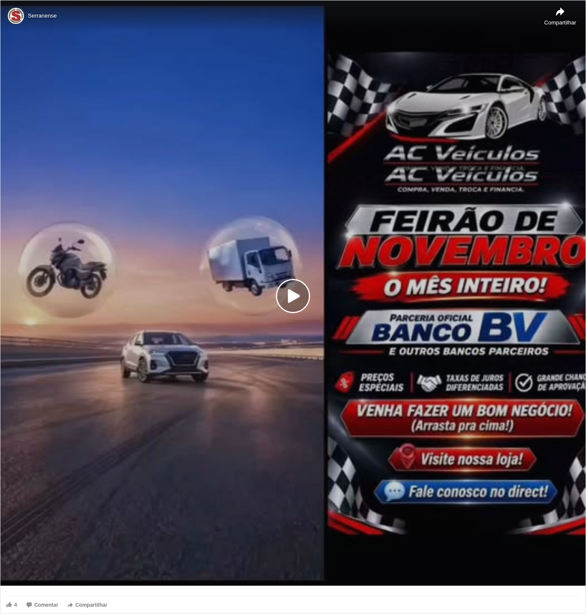

C42b4362863 — facebook.com
https://www.facebook.com/expocana/videos/30120438720979196/
Prioridade: HIGH · Cenário: C_POSSIBLE_OFFICIAL_CHANNEL · Revisão humana: PENDING
1. Decisão Consolidada
Justificativa
O anúncio em vídeo de feirão de veículos promove financiamento destacando a expressão 'PARCERIA OFICIAL BANCO BV' e 'Feirão BV FINANCEIRA' com uso do logotipo/marca do banco, sem apresentar a declaração regulatória de correspondente bancário independente e sem informar CNPJ ou razão social do estabelecimento comercial, violando os requisitos de transparência da Resolução CMN nº 4.935/2021. [Revisor: CONFIRM] A publicação em vídeo no Facebook refere-se a divulgação de feirão de automóveis da loja 'AC Veículos'. A peça gráfica exibida em E-SHOT-VIEWPORT e E-SHOT-FULL destaca de forma proeminente a marca 'BANCO BV' com a afirmação 'PARCERIA OFICIAL BANCO BV', além de menção a 'Feirão BV FINANCEIRA' (E-DISC-001). Não há qualquer exibição de razão social, CNPJ, declaração explícita de correspondente bancário ou canal de ouvidoria, violando as exigências regulatórias de transparência da Resolução CMN nº 4.935/2021. Conforme as diretrizes, mantém-se a classificação de forte indício com prioridade alta.
Limitações
- apenas a URL descoberta foi inspecionada; páginas internas, formulários e fluxos após cliques não foram acessados
- requisitos contratuais/internos não fornecidos: mapeamento limitado ao texto normativo
2. Screenshots


3. Catálogo de Evidências (Dados Brutos Observados)
| Ref | Tipo | Local | Conteúdo |
|---|---|---|---|
| E-URL | domain | url | URL final: https://www.facebook.com/expocana/videos/30120438720979196/ (domínio: www.facebook.com) |
| E-DISC-001 | text | search_index | Índice de busca (serper): Serranense on Reels — Feirão BV FINANCEIRA ✓ ✓ Taxas especiais e 1° parcela pra 120 vem aproveitar essa. 00:56. Feirão BV FINANCEIRA ✓ ... Nov 6, 2026 · 460 ... |
| E-SHOT-VIEWPORT | screenshot | viewport | evidence/C42b4362863/attempt-1/viewport.png (sha256 fe6cea7e38ba2006…) |
| E-SHOT-FULL | screenshot | page | evidence/C42b4362863/attempt-1/fullpage.png (sha256 e808fe11ff93d200…) |
| E-TITLE | title | head | |
| E-FOLD | text | viewport (acima da dobra) | Serranense <iframe src="https://www.facebook.com/plugins/video.php?href=https%3A%2F%2Fwww.facebook.com%2Freel%2F30120438720979196%2F&show_text=0&width=476" width="476" height="476" style="border:none;overflow:hidden" scrolling="no" frameborder="0" allowfullscreen="true" allow="autoplay; clipboard-write; encrypted-media; picture-in-picture; web-share" allowFullScreen="true"></iframe> Copiar Copiar Saiba mais sobre a incorporação de vídeos do Facebook no nosso site para desenvolvedores . Código de incorporação Voltar Compartilhar Compartilhar |
| E-CTA-1 | cta | page | Reproduzir |
| E-CTA-2 | cta | page | Silenciar |
| E-CTA-3 | cta | page | Entrar em modo de tela cheia |
| E-CTA-4 | cta | page | Copiar |
| E-CTA-5 | cta | page | Voltar |
| E-CTA-6 | cta | page | Compartilhar |
| E-CTA-7 | cta | page | Reproduzir o vídeo |
| E-CONTACT-1 | contact | page | Clique para assistir no Facebook <https://www.facebook.com/reel/30120438720979196/?t=0> |
| E-CONTACT-2 | contact | page | <https://www.facebook.com/stories/157268905851358/?ref=embed_video> |
| E-CONTACT-3 | contact | page | <https://www.facebook.com/stories/157268905851358/?ref=embed_video> |
| E-CONTACT-4 | contact | page | Reproduzir stories não vistos <https://www.facebook.com/stories/157268905851358/?source=EMBED_VIDEO&ref=embed_video> |
| E-CONTACT-5 | contact | page | Serranense <https://www.facebook.com/expocana?ref=embed_video> |
| E-CONTACT-6 | contact | page | site para desenvolvedores <https://developers.facebook.com/docs/plugins/embedded-video-player/> |
| E-CONTACT-7 | contact | page | Saiba mais <https://www.facebook.com/help/396404120401278/list?ref=embed_video> |
| E-CONTACT-8 | contact | page | Comentar <https://www.facebook.com/reel/30120438720979196/?ref=embed_video> |
| E-CONTACT-9 | contact | page | Compartilhar <https://www.facebook.com/sharer/sharer.php?u=https%3A%2F%2Fwww.facebook.com%2Freel%2F30120438720979196%2F&display=popup&ref=embed_video&src=post> |
| E-IMG-1 | image | page (acima da dobra) | imagem alt='' src=https://scontent.fcgh22-1.fna.fbcdn.net/v/t15.5256-10/899788064_4104417193198832_4330577433818140310_n.jpg?stp=dst-jpg_p526x296_tt6&_nc_cat=111&_nc_map=urlgen_bucketless&ccb=1-7&_nc_sid=3a9e82&_nc_ohc (1364x1364, acima da dobra) |
4. Análise de Marca (gemini-3.8-flash, brand-analyst/v5)
Dimensões Avaliadas
| Dimensão | Sinal | Achado | Refs |
|---|---|---|---|
| VISUAL_IDENTITY | CONFUSION | Arte do anúncio em vídeo utiliza a marca 'BANCO BV' em faixa de grande destaque com estética institucional acoplada ao evento 'Feirão de Novembro'. | E-SHOT-VIEWPORT E-SHOT-FULL |
| DECLARED_COMMERCIAL_IDENTITY | NEUTRAL | A loja se identifica com o nome comercial 'AC Veículos' no topo da peça publicitária, mas omite completamente sua razão social formal e CNPJ. | E-SHOT-VIEWPORT E-SHOT-FULL |
| CORRESPONDENT_TRANSPARENCY | CONFUSION | Inexistência de avisos de intermediação de crédito, ausência de qualificação como correspondente bancário independente e falta de dados de ouvidoria. | E-SHOT-VIEWPORT E-SHOT-FULL |
| INSTITUTIONAL_LANGUAGE | CONFUSION | Alega 'PARCERIA OFICIAL BANCO BV' e promove 'Feirão BV FINANCEIRA', induzindo percepção de evento ou canal oficial promovido pelo próprio banco. | E-DISC-001 E-SHOT-VIEWPORT E-SHOT-FULL |
| LOGO_USAGE | CONFUSION | Logotipo e grafia Banco BV aplicados com destaque na peça gráfica sem as devidas salvaguardas de conformidade regulatória. | E-SHOT-VIEWPORT E-SHOT-FULL |
| SERVICE_JOURNEY | NEUTRAL | Captação de interessados em financiamento de veículos direcionando para contato via direct ou visita à loja física. | E-SHOT-FULL |
| CONTACT_CHANNELS | NEUTRAL | Canais indicados são mensagens diretas na rede social e visitação presencial. | E-SHOT-FULL |
| CONSUMER_CONFUSION | CONFUSION | A menção de 'Parceria Oficial Banco BV' e 'Feirão BV Financeira' sem a transparência regulatória de correspondente pode gerar a impressão de contratação direta com o banco. | E-DISC-001 E-SHOT-VIEWPORT E-SHOT-FULL |
Indícios de Confusão
- [HIGH] INSTITUTIONAL_LANGUAGE: Uso de termos de chancela oficial como 'PARCERIA OFICIAL BANCO BV' na arte visual e 'Feirão BV FINANCEIRA' no texto da publicação, sugerindo vínculo institucional privilegiado ou canal oficial. — E-DISC-001 E-SHOT-VIEWPORT E-SHOT-FULL
- [HIGH] CORRESPONDENT_TRANSPARENCY: Omissão completa da declaração obrigatória de correspondente bancário (Resolução CMN nº 4.935/2021), dados societários (razão social e CNPJ) e canais de ouvidoria da instituição. — E-SHOT-VIEWPORT E-SHOT-FULL
- [MEDIUM] LOGO_USAGE: Exibição em destaque da marca/logotipo institucional 'BANCO BV' no corpo central do anúncio promocional do feirão de veículos. — E-SHOT-VIEWPORT E-SHOT-FULL
Indícios de Relação Legítima
- [MEDIUM] DECLARED_COMMERCIAL_IDENTITY: Presença do nome fantasia do estabelecimento comercial ('AC Veículos') no topo do cartaz de divulgação. — E-SHOT-VIEWPORT E-SHOT-FULL
Fatos Observados
- Publicação de reel/vídeo no Facebook promovendo feirão automotivo da empresa AC Veículos.
- A peça gráfica apresenta os dizeres 'PARCERIA OFICIAL BANCO BV E OUTROS BANCOS PARCEIROS' em destaque central acompanhado da marca Banco BV.
- A indexação de busca registra a legenda 'Feirão BV FINANCEIRA ✓ ✓ Taxas especiais e 1° parcela pra 120'.
- Não constam CNPJ, razão social cadastral, declaração de correspondente bancário (Res. CMN 4.935/2021) nem canal de ouvidoria na peça ou no perfil inspecionado.
Incertezas
- Não foi possível extrair a razão social e o CNPJ da AC Veículos a partir do vídeo ou da descrição disponível.
Síntese do Analista
O anúncio em vídeo de feirão de veículos promove financiamento destacando a expressão 'PARCERIA OFICIAL BANCO BV' e 'Feirão BV FINANCEIRA' com uso do logotipo/marca do banco, sem apresentar a declaração regulatória de correspondente bancário independente e sem informar CNPJ ou razão social do estabelecimento comercial, violando os requisitos de transparência da Resolução CMN nº 4.935/2021.
5. Identidade do Responsável
domain:facebook.com
Nenhum CNPJ ou razão social identificáveis no conteúdo coletado.
Fatos Observados
| Tipo | Valor | Ref | Contexto |
|---|---|---|---|
| domain | facebook.com | E-URL | |
| social_profile | https://www.facebook.com/expocana/videos/30120438720979196/ | E-URL | |
| social_profile | https://www.facebook.com/plugins/video.php?href=https%3A%2F%2Fwww.facebook.com%2Freel%2F30120438720979196%2F&show_text=0&width=476 | E-FOLD | |
| social_profile | https://www.facebook.com/reel/30120438720979196/?t=0 | E-CONTACT-1 | |
| social_profile | https://www.facebook.com/stories/157268905851358/?ref=embed_video | E-CONTACT-2 | |
| social_profile | https://www.facebook.com/stories/157268905851358/?source=EMBED_VIDEO&ref=embed_video | E-CONTACT-4 | |
| social_profile | https://www.facebook.com/expocana?ref=embed_video | E-CONTACT-5 | |
| social_profile | https://www.facebook.com/help/396404120401278/list?ref=embed_video | E-CONTACT-7 | |
| social_profile | https://www.facebook.com/reel/30120438720979196/?ref=embed_video | E-CONTACT-8 | |
| social_profile | https://www.facebook.com/sharer/sharer.php?u=https%3A%2F%2Fwww.facebook.com%2Freel%2F30120438720979196%2F&display=popup&ref=embed_video&src=post | E-CONTACT-9 |
Inferências de Associação (Não são Fatos)
- entidade agrupada pelo domínio registrável; um mesmo estabelecimento pode ter outros domínios não associados
- base da associação: domínio (sem CNPJ)
6. Mapeamento de Conformidade (Hipóteses)
Mapeamento indicativo para apoio à auditoria. Não constitui conclusão regulatória; a decisão definitiva pertence à auditoria.
Res. CMN 4.935/2021, art. 14, inciso II — NOT_APPLICABLE_UNLESS_COBAN
Fonte: NORMATIVE
Art. 14. O contrato de correspondente deve estabelecer: [...] II - vedação à utilização, pelo contratado, de logomarca ou de outros atributos que sejam similares aos adotados pela instituição contratante em suas agências, postos de atendimento, sítio eletrônico na internet, aplicativo ou outras plataformas de comunicação em rede;
Hipótese: Uso de logomarca, uso excessivo/desproporcional ou de atributos similares aos adotados pela contratante em seus canais. A norma disciplina correspondentes contratados; o responsável não foi identificado como correspondente.
Evidência observada: E-SHOT-FULL E-SHOT-VIEWPORT
Informação faltante:
- confirmar se o responsável é correspondente contratado (relação pública da contratante — art. 21 — ou base interna)
Res. CMN 4.935/2021, art. 14, inciso III, alíneas a e b — NOT_APPLICABLE_UNLESS_COBAN
Fonte: NORMATIVE
Art. 14. O contrato de correspondente deve estabelecer: [...] III - divulgação ao público, pelo contratado, de sua condição de prestador de serviços à instituição contratante, identificada pelo nome com que é conhecida no mercado, com descrição dos produtos e serviços oferecidos e canais de contato da instituição contratante, inclusive de sua ouvidoria, em local visível, em destaque e em formato legível, por meio de: a) sítio eletrônico do correspondente na internet, acessível na página inicial; b) aplicativo e outras plataformas de comunicação em rede do correspondente; [...]
Hipótese: Divulgação ao público da condição de prestador de serviços/parceria ausente, insuficiente, ambígua ou sem destaque. A norma disciplina correspondentes contratados; o responsável não foi identificado como correspondente.
Evidência observada: E-DISC-001 E-SHOT-FULL E-SHOT-VIEWPORT
Informação faltante:
- confirmar se o responsável é correspondente contratado (relação pública da contratante — art. 21 — ou base interna)
- canais de contato/ouvidoria da contratante não observados no material coletado (podem existir em páginas não inspecionadas)
Res. CMN 4.935/2021, art. 3º — NO_INDICATION_OBSERVED
Fonte: NORMATIVE
Art. 3º O correspondente atua por conta e sob as diretrizes da instituição contratante, que assume inteira responsabilidade pelo atendimento prestado aos clientes e usuários por meio do contratado.
Evidência observada: —
Se o responsável não for correspondente contratado, os indícios podem caracterizar uso indevido de marca ou fraude, fora do escopo da Res. 4.935: avaliar encaminhamento às áreas jurídica/segurança.
Limitações: requisitos contratuais/internos não fornecidos: mapeamento limitado ao texto normativo
7. Revisão Crítica (gemini-3.8-flash)
Decisão: CONFIRM → STRONG_INDICATION / HIGH
A publicação em vídeo no Facebook refere-se a divulgação de feirão de automóveis da loja 'AC Veículos'. A peça gráfica exibida em E-SHOT-VIEWPORT e E-SHOT-FULL destaca de forma proeminente a marca 'BANCO BV' com a afirmação 'PARCERIA OFICIAL BANCO BV', além de menção a 'Feirão BV FINANCEIRA' (E-DISC-001). Não há qualquer exibição de razão social, CNPJ, declaração explícita de correspondente bancário ou canal de ouvidoria, violando as exigências regulatórias de transparência da Resolução CMN nº 4.935/2021. Conforme as diretrizes, mantém-se a classificação de forte indício com prioridade alta.
| Tema | Severidade | Questionamento | Refs |
|---|---|---|---|
| domain_attribution | MEDIUM | Responsável pela página não identificado; a conclusão sobre a marca não pode ser atribuída a um estabelecimento específico. | E-URL |
8. Origem da Descoberta
| Fonte | Consulta / hipótese | URL original | Título / trecho |
|---|---|---|---|
| serper | "bancos parceiros" "bv financeira" -site:bv.com.br -site:bancobv.com.br -site:bvfinanceira.com.br -site:bvinvestimentos.com.br -site:napista.com.br -site:bvopen.com.br -site:meufinanciamentosolar.com.br -site:votorantim.com.br -site:vam.com.br -site:reclameaqui.com.br -site:jusbrasil.com.br -site:jus.br H2-product:bancos-parceiros | https://www.facebook.com/expocana/videos/30120438720979196/ | Serranense on Reels Feirão BV FINANCEIRA ✓ ✓ Taxas especiais e 1° parcela pra 120 vem aproveitar essa. 00:56. Feirão BV FINANCEIRA ✓ ... Nov 6, 2026 · 460 ... |
9. Cadeia de Custódia da Coleta
sha256 c794807113a03d0c53269ec2d689265bfda8699b7ba512d773b622691e562fc8
Original: https://www.facebook.com/expocana/videos/30120438720979196/
Final: https://www.facebook.com/expocana/videos/30120438720979196/
| Artefato | Caminho | SHA-256 | Bytes |
|---|---|---|---|
| screenshot_viewport | evidence/C42b4362863/attempt-1/viewport.png | fe6cea7e38ba2006b5131517f3e1e3b1fec083f44b61513e4212aabbb4931bd4 | 835856 |
| screenshot_full | evidence/C42b4362863/attempt-1/fullpage.png | e808fe11ff93d200e61faab6cb44a075e5b94c230fa4c2ee8dbab9cd15737c7d | 1277036 |
| html | evidence/C42b4362863/attempt-1/page.html.txt | bd07dd8db3b0449c078647e5429c77f280fee34f32f95bb728f07cd7cb51c394 | 241746 |
| text | evidence/C42b4362863/attempt-1/text.txt | 69408defdba11d4f0d00739e7f57c4226a94f2a86fd4e870b1905c4b8be799a8 | 673 |
| page_data | evidence/C42b4362863/attempt-1/page.json | c2db07ec08b85d25b18b8312432f3169dd4a73d991b3ea04bdaf634f2af98621 | 5928 |
Ocorrências e conteúdo não inspecionado
- apenas a URL descoberta foi inspecionada; páginas internas, formulários e fluxos após cliques não foram acessados
10. Histórico de Estados
| Quando | De | Para | Nota |
|---|---|---|---|
| 2026-11-25T18:12:05+00:00 | DISCOVERED | QUEUED | prioritised (score 2.0) |
| 2026-11-25T18:36:33+00:00 | QUEUED | COLLECTING | |
| 2026-11-25T18:36:39+00:00 | COLLECTING | COLLECTED | |
| 2026-11-25T18:36:39+00:00 | COLLECTED | ANALYZING | |
| 2026-11-25T18:38:13+00:00 | ANALYZING | REVIEWING | |
| 2026-11-25T18:38:24+00:00 | REVIEWING | COMPLETED |